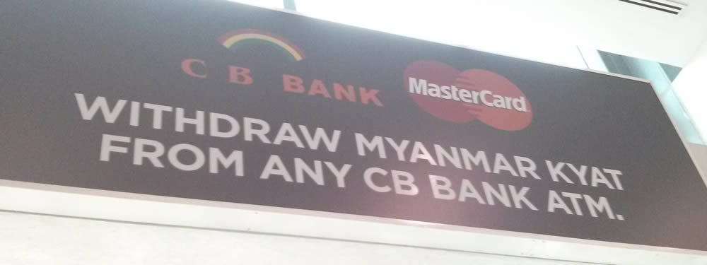

Money in Myanmar

For a long time, taking money to Myanmar meant getting your hands on pristine USD notes and changing them into local Kyats on the black market. That is all starting to change.
Until very recently the only way that you could get Kyat (MMK) to spend in Myanmar was to bring US dollar notes with you and to make sure they matched some strict criteria:
US dollar bills must be 2006 or later bills that have colour and are in absolutely perfect condition: no folds, stamps, stains, writing marks or tears. Lonely Planet Myanmar
Additionally, the exchange rate for these notes was up to ten times worse at banks than it was on the black market so you had to change your money with unofficial money changers by the side of the street.
Luckily, that has now changed. The move towards democracy and the relaxation of international sanctions means that:
- Banks will now exchange several different currencies (at decent rates). From personal experience USD and THB will be changed. I've also heard that EUR, SGD and CNY are also accepted.
- There are now ATMs which accept international cards (Mastercard and Visa) and give you a decent rate.
Note that some hotels still only accept USD as payment for rooms (and rates are always quoted in USD) so you will still need some pristine notes with you. Government attractions also quote in USD but will let you pay in Kyat - sometimes at a terrible conversion rate though e.g. Shewedagon Pagoda is 5 USD but 5000 if you pay in Kyats (rather than about 4400 based on the actual exchange rate).
ATMs
CB Bank has ATMs around the country and we used several of them without any problems. Convenient locations in Yangon include:
- At the top of Shwedagon Paya!
- 5 minutes down the road from Motherland 2
- Half a block to the east of Sule Paya
- In the international and domestic terminals of the airport
You can find a complete list of locations with their online branch finder. The only town we couldn't find one in was Myiek.
Note that sometimes the ATM is inside the bank (this happened to us in Mawlamyine - it was still on a shipping pallet so maybe it just hadn't been installed properly yet). In these cases you will need to go when the bank is open.
All of the ATMs add a fee of 5000 MMK (about USD 5.60) for international withdrawals so it makes sense to withdraw large chunks of money infrequently rather than bit by bit as you go along.
The actual conversion rate you get will depend on your credit/ debit card. On our card (more info for UK residents) we got between 1,382 and 1,389 MMK per GBP which is close to the official exchange rate on Google and definitely better than we would have got by converting GBP > USD > MMK (or GBP > THB > USD > MMK which is what we would have needed to do in Bangkok).
Leftover Kyats
Make sure you use up (or convert back) your Kyats before you leave Myanmar. And note that there are no money changing facilities in Mandalay airport. We got stuck in Bangkok with 30,000 Kyat and nobody would change them!
If you do get into that situation then you can try what we did:
- Look for a flight leaving towards Myanmar
- Go to the departure gate for that flight
- Look for a friendly looking traveller and ask them if they want to buy some Kyat.
It worked great for us in the end but I think we were pretty lucky!
Comments